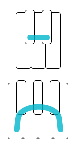
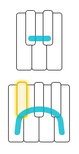
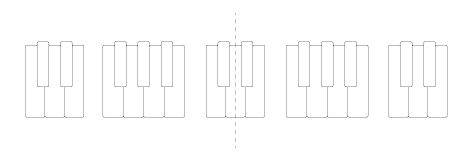

What Is a Shape?
Standard Musical Ideas
People who already have some experience studying music often ask, "isn't the shape just a scale?" Or maybe it's the song's key? Or maybe a mode?
These are all ways of asking: how can we relate Shapes to standard musical ideas? How can we connect this experience with the terms we've already learned, and that other musicians will understand?
To begin making this connection, it helps to think of a shape as a way of zooming out to a broad idea that has the potential to become any, or all, or none, of these more familiar ideas. As a vantage point from which we can see and experience familiar musical concepts a little differently.
The standard idea most closely related to a shape, perhaps, is a key signature. What a key signature does is to say, okay, the musical staff is mapped to the key of "no sharps and no flats" (or all the white notes of the piano), but I'm going to modify these notes so they contain, for example, a "B-flat" instead of a "B," and the collection of notes will now more closely match the music I'm describing.
The notes of a key signature will give you one of the shapes. So the first shape you played with would be the key signature of six flats (or six sharps).

But this isn't quite how a shape works, because the shape doesn't reference the key signature of "no sharps and no flats." Instead, each shape gets to be its own starting point, its own key signature of no sharps and no flats. And there's something very different in the way of thinking when the basis for your collection of notes isn't the white notes of the piano that are then modified, but rather, it's just this collection of notes—the shape.
This means you can take any note of the shape, say the middle note in the bottom group, and you could decide to play one note higher, to modify it, a note "up" from that note.

Thinking in standard terms, you would begin with an A♭ or G♯ that's part of the key signature, then modify that note "up" to, effectively, an A♭-sharp, or G♯-sharp, which you would then call "A-natural," or "G-double sharp"—a modified version of a note that's already modified from the white notes of the piano.
So when you're thinking in terms of key signature, you're referencing a theoretical collection of notes—the key of no sharps and no flats—that doesn't necessarily describe the sound and experience of the music you're playing with. That theoretical collection matters, because it describes the relationships between notes that are common to all the key signatures. But a shape lets you step back and work with these relationships more broadly, without having to reference all of them in terms of any particular one of them.
A Scale or Mode?
Now, if you choose one of the notes in the shape, say the first top key in the bottom group, and play all the notes of the shape in order starting from that note, you'll get a scale.

And starting from this particular note, you get a Major scale, which is also a way of expressing the Major mode. Or you could choose to start from any other note of the shape, and you'd get a different scale and mode: the minor, dorian, or Lydian, and so forth.
But a shape doesn't tell you which note to start or end on. And it also doesn't tell you in which order to play the notes. It's just a collection of notes that you can play in any order or combination. So while a shape has all the ingredients to become a scale or a mode, it isn't one, yet, until you—or a song you're playing with—turns it into one.
In fact, as you're playing, you'll come across different songs that fit with different scales or modes, but that are all still in the same shape. Or individual songs that change midway from one scale or mode to another, but that nonetheless remain in the same shape. This means that scales can change, modes can change, chords can change, and in some cases, even key signatures can change (to their enharmonic equivalents), and yet you can still remain in the same shape.
And really, one purpose of a shape is to let you zoom out and think in terms of something broader than any of these concepts. You're taking all the notes that fit with the song on one hand, and the note they're organized around on the other, and allowing them to remain separate. So you can focus on just the broad grouping of notes that fits with the song throughout.
Then your intuitions about what sounds good can begin to take over and fill in the details. You begin to do less thinking, and more experimenting, more interacting with what's happening in the song. You begin to focus more on the sound, experience, and feeling of playing, rather than on the specific concepts that may describe the song, like scales or modes.
The Song's Key?
When a musician asks, "what key is this song in?" they usually mean two separate things: first, what's the overall collection of notes that fits with the song—the key signature—and second, what's the note that all the other notes are pulling toward— the key note, tonal center, or tonic.
By this way of thinking, the idea of key is very closely related to mode. Key is like a mode that's applied to the whole song, at the most general level, so that it describes the sound of the song overall. And as with mode, a shape lets you begin by separating these two aspects of key from one another, and to play, at first, with just the collection of notes that fit with the song.
Because to hear that a shape fits with a song is a very different perception, way of listening, than to hear which particular note is the tonal center. Most people can hear this fit very easily, intuitively, for the same reasons that you can have the experience of hearing when a musician plays a "wrong" note during a performance, even if you have no musical training whatsoever. But to have a feeling for the tonal center requires a much more specific kind of listening, and different people will have this experience more or less intuitively at first. Yet both of these experiences—the collection of notes and the note they're pulling toward—are aspects of the song's key. So one way to think of a shape is as half of a key, and before it becomes a key.
Stepping into slightly more theoretical territory, it also helps to make a distinction between "Major" and "Minor" as they are often used to describe keys in functional tonality, and the Major and minor modes themselves. Many of the songs you'll come across fit with a shape and tonal center that give you a different mode than the Major or minor modes. This is because any note in the shape has the potential to be the tonal center in a song, and the Major and minor modes are only two of seven possibilities.
In functional tonality, which has a strong influence on many of our standard musical ideas, key is most often described as being either Major or Minor. But this means these terms have been abstracted from the modes themselves, and are instead describing more general categories of modes: the Lydian, Major, and Mixolydian (or Dominant) modes would all be absorbed into the "Major" category, and the dorian, minor, phrygian, and locrian modes would be absorbed into the "Minor" category. These categories aren't a result of thinking in terms of modes, but of thinking in terms of triadic chord structures, and in particular, of the quality of the third in the chord, as being Major or Minor. A key, then, becomes a broad category within which each chord has a function. These broad categories can be described by scales, or modes, but it is the Major and minor modes in particular that contain the notes most significant to tonal function, and so in functional tonality, all the other modes become modifications of these two, paradigmatic modes.
Now, if all this about function made no sense whatsoever, don't worry, you're hardly alone. The point, perhaps, is that thinking of keys as being strictly Major or Minor will leave you with a whole lot of songs that don't quite fit with the shape you're using to describe them. If you've ever heard a DJ set on the radio, or at a party, where the DJ mixes one song into another, and the beat matches, but the notes of the two songs don't quite match, you've had an experience of this very problem. Most DJ software is programmed to detect only Major and Minor keys, and (assuming the detection algorithm works correctly), all the different modes will be grouped together under only these two categories, so that, say, a song in the phrygian mode and a song in the dorian mode will both be described as "Minor," and will be mixed together, and everyone will stop dancing to inwardly cringe for a moment.
But if you allow yourself to think, as we did at first, of key as being a mode that's applied to the whole song, you won't run into any of these sorts of problems. And moreover, you'll always stay grounded in the intuitive experience of the notes that fit—the shape, and the note they're pulling toward—the tonal center. This will be the basis from which you can also begin to understand musical ideas that are slightly abstracted from this more concrete experience—ideas like the Major and Minor keys in functional tonality.
The Song's Chords?
So, one note of the shape can become the tonal center of a song, and the combination of the shape and tonal center will describe the song's key overall. But more locally, one note of the shape can also become the root note of a chord, and the combination of the shape and root note will also fully describe that chord.
If you begin from the root note and skip every other note of the shape, you'll get a chord, and in particular, a triad. And if you continue skipping every other note until you return to the root note an octave higher, you will have played all the notes of the shape, and you will have extended your triad all the way up to a 13th chord.
Perhaps a little less traditionally, if you play any combination of the notes in the shape, organized in relation to the root note, you will have also played a chord, although not necessarily a triadic chord.
And even less traditionally, you could play just a single note, and that note can organize all the other notes of the shape that are already implied in the song more broadly, into a change at the chord level, and thus, into a chord.
In all of these cases, the shape is a way of describing the song's chords. If chord roots change within a single shape, that same shape will describe multiple different chords. And further, if the whole song is also in the same shape, then the shape will describe both an aspect of the song's key, and of its changing chords, at the same time. It's a single idea that gives you a way into these different theoretical layers and musical aspects of the song, all at once.
A Shape as an Idea
What, then, would it mean to think of a shape as a musical idea in its own right, rather than thinking in terms of standard concepts? What are a shape's qualities, and what does it allow you to do?
On one hand, a shape uses an instrument—the keyboard—as a diagram. So there's no separation between the concept you're using to think about music, and your means of making music.
Moreover, that diagram is a mnemonic device, a very efficient way to help you remember complex ideas quickly. If you've ever tried a keyboard tutorial that lights up the notes you're supposed to play, or that scrolls the notes like Guitar Hero does, you've had an experience that forces you to think purely in terms of individual notes, from one note to the next. It's a little like playing a game of whack-a-mole. And this is often how reading music, or learning a song, feels to a beginner.
But rather than lighting up the individual notes on the keyboard, a shape represents a broader collection of notes by connecting them with a stroke. It allows you to grasp the whole idea at once, as a single symbol, a gesture, without having to think about each of the parts that make it up. So in addition to representing ideas directly on an instrument, and in a way that's easy to remember, the shape also emphasizes musical contexts over specific musical structures, like melodies or chord voicings. It shifts the focus from which notes to play, to which notes are possible to play. And this means that you become a part of the concept as well, since what it represents is the place where your intuitions meet a particular moment of music.
So is the shape an idea that's specific to the keyboard, or does it apply to other instruments as well?
Guitarists often think in terms of shapes, too. But these tend to describe the shapes that particular chord structures or scales make on the fretboard, that you can then move around to different positions. So while guitar shapes are also a way of using the instrument as a diagram, they tend to focus on specific musical structures more than on contexts.
Of course, nothing prevents a guitarist from understanding a scale shape as a broader collection of notes that doesn't necessarily start or end on any particular note, or from understanding chord shapes as particular expressions of that collection at a more local level of the song. These are the very same distinctions that we've already made between a shape and a scale, mode, or chord. It's the difference between thinking of the shape of some particular musical structure, versus as an idea that filters the entire fretboard into a collection of notes that will fit with the song.
The physical layout of a shape is different on the guitar, too, because while the fretboard itself is structurally similar to the keyboard—in that both divide a continuous pitch spectrum into the same sequence of relationships between individual notes—you access those relationships through several strings that are each tuned differently. So the guitar is like several keyboards side-by-side, and staggered according to how the strings are tuned. This means the guitar has its own set of diagrammatic constraints and affordances that are different from those of the keyboard.
The keyboard emphasizes the relationships of the diatonic order—the key of no sharps and no flats—in a way that the guitar doesn't, through its layout of bottom, "white" keys and top, "black" keys. The position of the two semitones within the diatonic order has the effect of suggesting two distinct groupings of keys on the keyboard, one with two top and three bottom keys, and the other with three top and four bottom keys. These groupings repeat in a symmetrical pattern across the keyboard, and they offer a simple, convenient unit for diagramming a shape.

But they also organize the overall sequence of notes on the keyboard according to the relationships of the diatonic order. This leads to a diagrammatic inconsistency based on the constraints, or the priorities, of the instrument, similar to the inconsistencies in how guitar shapes move across different strings.
So there are instrumental and diagrammatic aspects of a shape that are closely linked. And this relationship allows the instrument itself to become a musical symbol, a means of representing musical ideas. But then, the shape also represents a broad collection of notes that fit with a song, and while you can access this collection in different ways on different instruments, it is an idea that's not specific to any particular instrument, or even, necessarily, to instruments at all.
So, What is a Shape?
The mnemonic, instrumental, and conceptual aspects of a shape, paired with a song, all set the stage for a musical experience that's very intuitive. This experience relies less on any standard musical ideas you've learned, and more on your sense of what sounds good with the song, or adds something new to the song. It draws on all of the experience you've gathered by being surrounded by music throughout your life.
And so it's not that absolutely anything in the shape will sound good with the song—but more that anything you play is very likely to sound good. The shape gives you just enough to allow your intuitions to take over.
So in one sense, a shape is a way of stepping back from the ideas you'd usually encounter at first, like learning how to construct a scale so that you can improvise with it. But you can also think of a shape as what happens after you've learned all those kinds of ideas, when you've internalized them and don't have to think about them anymore.
Because if you're an experienced musician, and you're improvising, the experience is very much like playing with a shape. You're no longer thinking "this is a G," or "that's a Major scale" and so on, although you could certainly turn on that layer of thinking if you wanted to. Instead, you're in a musical context, you're reacting to the music, and you're using your intuitions and your instrument to move through the music in a way that sounds good to you. It's only once you're in the midst of this kind of experience that you might start to ask questions like, okay, how can I understand what I just did? And how might I incorporate that understanding into what I do next?
So even without having ever played an instrument before, a shape lets you jump into something of what it feels like to be an experienced musician—to have that extraordinary feeling right from the beginning. And this feeling and experience becomes the basis for your learning. It's a place that generates potential, not only for what you might play, but also for what concepts you might draw on, whether these concepts are standard or nonstandard, clearly articulated or not yet disentangled from one another.
In this way, a shape is not meant to be an alternative to standard musical ideas, or to the theoretical tradition it grew out of. It doesn't say, as many alternative methods do, "music learning is hard, so we've gotten rid of all that hard stuff and are starting with something totally different." Quite the opposite, a shape is meant to give you a way into the tradition, but a very particular way. A shape sets you up to think of any musical idea you encounter as a little instrument, or a little world that you can step into and play around in. An instrument or world that gives you some possibilities, some constraints, and that helps you notice something particular about music. This is a creative way to think of any musical idea—to ask, okay, what can I do with this? How can I place myself inside of this idea, and what does it afford me? And beginning with a shape, you start to build a kind of toolset of musical ideas. You won't rely on these tools entirely, but you might draw on some of them, sometimes, for different purposes, if and when they become relevant. Or sometimes you might decide not to think in any of these terms at all, and to just play with the shape.
As a way into learning music, a shape aims to start with the broadest and blurriest idea possible—your intuitions—and to gradually focus that idea into more refined, specific ideas. Beginner learning often works the other way around—by starting with the smallest ideas and building upward toward intuition. There's often a promise implied in beginner music lessons: if you do this very repetitive, rote thing, and you do it for long enough, it will eventually fall away, or become something else, and you won't need it anymore. And the learner says, okay, I kind of trust you, and then more often than not stops taking lessons before the rote activities ever transform into something that feels like intuition.
When it does make that transformation, however, the result is already very refined—an intuition that includes a great deal of technical experience. This is a very effective, and ultimately satisfying approach to learning music, but most people don't stick around for long enough to experience its benefits. And besides that, building up from smaller, more specific ideas can give the impression that music is made up of those ideas, rather than that it is something that generates ideas, or is perhaps even entirely outside the realm of ideas.
When you begin by playing with a song, moving between the notes of the shape, and following your ear, you're already playing in this intuitive way. You're not thinking, "now I'm going to play a G, now I'm going to play an A-flat, where's the A-flat on the keyboard? Oh, it's in the middle of the three top keys..." Rather, you play a note, and maybe have a feeling for which direction you should go next, or you may jump to some other note and listen to what it sounds like, then have a sense of whether the next note should be higher or lower, and so on.
So you're already working in this more intuitive way, following contours of the melody, and of your instrument, responding to the sound of the song. There's no transition where you stop thinking in terms of individual notes, or scales, or so on, and start doing something more intuitive. Your intuition is what frames the ideas from the beginning—even what creates them. The shape is a means of setting into motion a process of playing and of learning where every experience and every idea are connected in this way, and so it's also very efficient, and inexhaustible.